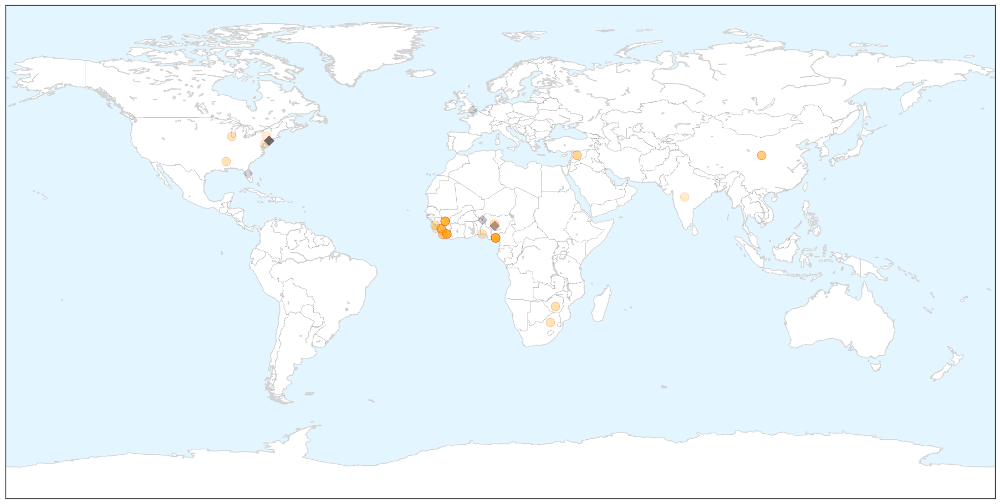

Unknown
30-Day Web Trend
0 alerts, 0 warnings

30-Day Twitter Trend
1 alerts, 0 warnings

Article Locations


Article Confidences

Top Articles:
- 0.997
- Japanese outbreak heightens awareness of Getah virus in horses
- 0.981
- CDC Hopes This Year’s Flu Shots Will Be More Effective
- 0.978
- EYES OPEN, PLEASE....
- 0.965
- Health Ministry to Continue Monitoring Schools Affected By Hand, Foot and Mouth Disease
- 0.937
- Health Ministry to Continue Monitoring Schools Affected By Hand, Foot and Mouth Disease
- 0.917
- Chicago Tribune
- 0.917
- Chicago Tribune
- 0.917
- Chicago Tribune
- 0.916
- AVOID THE FLU BY GETTING AN EARLY SHOT!
- 0.892
- Protect yourself from the flu
- 0.880
- Wyoming's First-Ever Case Of Human Rabies Ends In Death Of 77-Year-Old Woman
- 0.875
- Rare Diseases like Chagas and Leprosy are Becoming more Commonplace in the U.S.
- 0.868
- UN: Polio vaccines in Ukraine safe despite local concerns
- 0.866
- China to spend $1.5 bln to subsidize hospital reform in 2016
- 0.857
- Ethiopia takes step to eliminate river blindness
- 0.857
- Salmonella unmasked as major killer of young children in Africa
- 0.847
- Salmonella unmasked as major killer of young children in Africa
- 0.841
- UN: Polio vaccines in Ukraine safe despite local concerns
- 0.832
- Nasal-spray shortage means older students will get flu shots
- 0.831
- Salmonella unmasked as major killer of young children in Africa
- 0.830
- 12 hospitals that might make you sicker
- 0.821
- Second child sickened by E. coli after Oxford fair visit improves — Health — Bangor Daily News — BDN Maine
- 0.820
- State awaiting results of tests from Oxford fairgrounds as it investigates 2 E. coli cases
- 0.800
- Cambridgeshire health bosses lead the way in getting first flu jabs
- 0.788
- The surgery was successful but the patient died – make sure this isn’t you
- 0.786
- Deadly Food Poisoning Cases In 35 States Spread To Maryland Amid Recalls
- 0.784
- Gonorrhea treatments may lose effectiveness
- 0.765
- AstraZeneca Presents Respiratory Syncytial Virus (RSV) Study Results at IDWeek 2015
- 0.760
- South Bay Teen Battling Flesh-Eating Bacteria Undergoes 10th Surgery
- 0.751
- Natural Remedies For Cold & Flu For Kids
- 0.715
- Wyoming marks first known rabies fatality with death of woman, 77
- 0.707
- German prosecutors raid VW offices amid emissions probe
- 0.707
- Hero of French train attack Spencer Stone stabbed in California
- 0.707
- French far right’s Marine Le Pen clashes with Hollande
- 0.707
- Canadian PM Harper turns niqab into major campaign issue
- 0.707
- Brazil's Rousseff loses legal battle, faces impeachment threat
- 0.706
- Japanese encephalitis patients in Cordillera recovering
- 0.690
- Top Vector Control officials withdraw resignations
- 0.678
- Gov't dropped the ball on virus spread in schools, says Opposition
- 0.667
- Breaking the fever
- 0.664
- Costly Protection - KAUZ-TV: Newschannel 6 Now
- 0.655
- Photos: Preparing to keep children safe from extreme weather in the Pacific
- 0.652
- Profits for Haiti: Commercial Real Estate Experts Do Their Part to Help Survivors
- 0.645
- Malaria confirmed as cause of teacher’s illness
- 0.639
- WHO: Don't delay HIV treatment
- 0.637
- Mitsui Credit Global Comments as South Korea Cuts Rates On MERS
- 0.631
- New Case of Rabies Reported in Lane County
- 0.620
- Flu season is here; time to get your shot
- 0.619
- Health « ISN Blog
- 0.618
- Blog: Health Dept. gives flu shots
Showing top 50 articles...
Top Tweets:
- 0.723
- UK panel doesn't support use of flu drugs for regular cases of season flu but sees benefit for hospitalized cases. https://t.co/WrZqrwklVX
Ebola
30-Day Web Trend
0 alerts, 0 warnings

30-Day Twitter Trend
0 alerts, 0 warnings

Article Locations

X

Article Confidences

Top Articles:
- 1.000
- Ebola: first week without a new case of disease
- 1.000
- No new Ebola cases for a full week
- 1.000
- Ebola scare in Nigeria false alarm: WHO
- 1.000
- African Ebola Epidemic Shows Signs of Winding Down
- 0.999
- First full week with no new Ebola cases since March 2014
- 0.999
- Daily Online Fresh News From Around The World
- 0.997
- World records first Ebola-free week since 2014
- 0.996
- No new Ebola cases in past week
- 0.996
- No new Ebola case in one week, says WHO
- 0.995
- Ebola countries record first week with no new cases
- 0.994
- Does Malaria Give Ebola Patients Better Survival Odds?
- 0.988
- Fear of fresh Ebola outbreak hits Calabar
- 0.987
- FG dispatches medical team as Ebola scare hits Calabar
- 0.987
- Doctor Who Survived Ebola Describes Disease's' Aftermath on the Body
- 0.972
- Ebola scare hits Nigeria again, 10 quarantined in Calabar
- 0.970
- Statement from USAID Associate Administrator Eric Postel on Sammie's Award
- 0.967
- 10 critical mistakes in last year's Ebola outbreak
- 0.959
- China to Build 100 Hospitals and Clinics across Africa
- 0.950
- Why global businesses should be prepared for pandemics
- 0.947
- Christian Aid tentatively welcomes a week without Ebola in West Africa
- 0.942
- Liberia needs 40,000 Doctors
- 0.908
- During Ebola…Significant increase in maternal mortality VSO report « Awoko Newspaper
- 0.902
- MMWR News Synopsis for October 8, 2015
- 0.871
- China to build 100 hospitals, clinics in Africa
- 0.867
- Chinese govt to build 100 hospitals in Africa
- 0.863
- CDC selects two Baltimore colleges to receive grants to stop disease spread
- 0.838
- 'Doctors' strike helped curtail Ebola spread'
- 0.790
- Sierra Leone: Press zooms on Ebola and elections
- 0.770
- As Deadly Ebola Rages On, Liberian Leader Calls On Citizens To Seek "God’s Face”
- 0.670
- the vaccine that left a scar — NewsWorks
- 0.630
- Three people have been taken to a trauma centre in serious condition after a two-car crash at Martin Grove Rd :: AD HOC NEWS
- 0.612
- One year later, Ebola still haunts Sierra Leone classrooms
- 0.565
- The ‘New Anarchy’ and Global Health Governance before another ‘Ebola’
- 0.553
- The El Nino crisis you’ve never heard of
Top Tweets:
- 0.984
- interpreted haemorrhagic fever as (Ebola Virus) in their report. Please note there is no Ebola Diagnosing Center in Edo 2/3
- 0.942
- Sociocultural Dimensions of the Ebola Virus Disease Outbreak in Liberia anthropology http://t.co/Xd8pvBny2J
- 0.827
- RT: No confirmed Ebola cases were reported in the week to 4 October. First time that a complete epi week has 0 confirmed cases since …
- 0.790
- Ebola Cases Hit Zero - MedPage Today http://t.co/2G8nbRfVX1 ebola EVD
- 0.783
- No new cases of Ebola reported for first time since March 2014 – UN health agency - UN News Centre http://t.co/qtYnzrImLI ebola EVD
- 0.752
- Rapid diagnosis and isolation can slow an Ebola outbreak. Ebola treatment units labs play a critical role http://t.co/v9WFrkg48h
- 0.746
- WHO Reports No new Ebola Cases in Past Week - Bella Naija http://t.co/xbuHcZNPfb ebola EVD
- 0.737
- No new Ebola cases – WHO - The Nation Newspaper http://t.co/nyiw5OAkzD ebola EVD
- 0.687
- Doctor Who Survived Ebola Describes Disease's Aftermath on the Body - Live Science http://t.co/1m3siMrw3Y ebola EVD
- 0.662
- RT: Ebola countries record first week with no new cases - http://t.co/ISZyGbeP4Z Ebola
- 0.651
- Ebola scare hits Nigeria again 10 quarantined in Calabar - Vanguard http://t.co/XBn1VOcpgN ebola EVD
- 0.650
- For the first time since the outbreak started zero cases of Ebola recorded in one week (to Oct 4) @WHO says.
- 0.626
- 10 quarantined in Nigeria over Ebola scare - Fox News http://t.co/PdmkZLmeZl ebola EVD
- 0.621
- Ten quarantined in Nigeria over Ebola scare - Eyewitness News http://t.co/FRglAtEdDA ebola EVD
- 0.539
- First Person to Contact Ebola in U.S. to Appear at Convention in Hyannis - GoLocal Worcester http://t.co/CYBwN1hjx9 ebola EVD
- 0.523
- RT: You boring blank empty colourless beautiful Ebola virus weekly case map http://t.co/cnoEHjCPDf
- 0.523
- RT: You boring blank empty colourless beautiful Ebola virus weekly case map http://t.co/cnoEHjCPDf
- 0.523
- RT: You boring blank empty colourless beautiful Ebola virus weekly case map http://t.co/cnoEHjCPDf
- 0.513
- What Happened to Liberia's Ebola Orphans? - Irin http://t.co/WgW8Cm9iIE ebola EVD